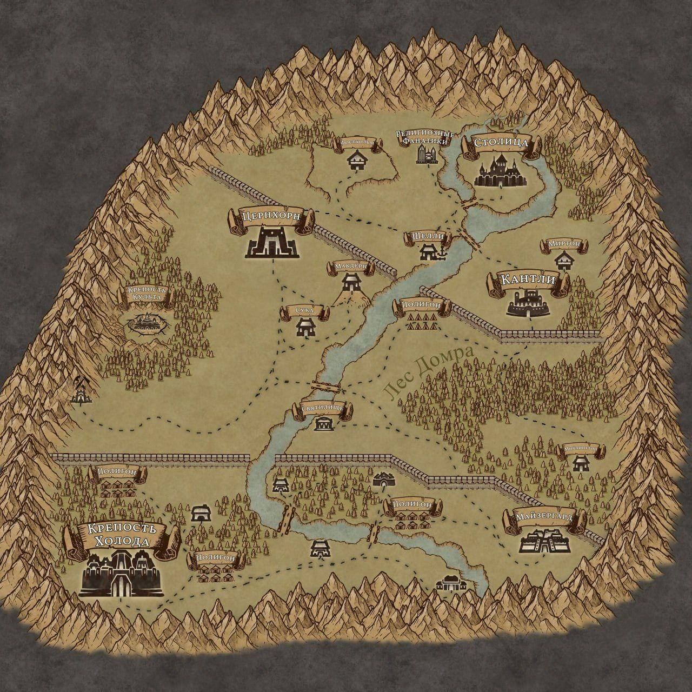
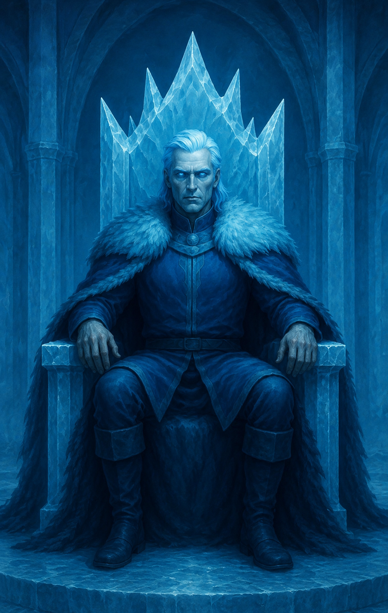

Лучники
Дальнобойные подразделения армии.
О Майзервине
Майзервин — северное королевство, земли которого скованы холодом. Суровый климат стал не просто частью жизни его жителей, но и одной из главных особенностей государства: холод сопровождает воинов Майзервина даже далеко за пределами родных земель.
Сердцем королевства является Крепость Холода — главный оплот власти Майзервина и резиденция короля Галдвина. Именно отсюда правитель управляет своими землями, принимает решения о войне и определяет отношения с соседними государствами.
Несмотря на суровые условия, Майзервин не является отрезанной от мира страной. Его положение и военная сила делают королевство важным участником противостояния, развернувшегося после появления докаинов.
I · Земля холода
Он стал частью самого образа королевства и его военной силы. При приближении воинов Майзервина температура может заметно падать, благодаря чему присутствие его представителей ощущается ещё до того, как они появляются перед противником.

II · Армия Майзервина
Армия Майзервина приспособлена к войне в суровых условиях и использует холод как одно из своих главных преимуществ.
Воины королевства сражаются не только обычным оружием. В войске присутствуют маги, способные использовать силы холода и льда, а само приближение отрядов Майзервина может выдавать резкое изменение температуры.
Майзервин использует разные виды войск, сочетая обычных солдат, стрелковые подразделения, конницу и магическую поддержку. Благодаря этому королевство способно не только защищать собственные земли, но и проводить разведку и военные операции далеко за своими границами.
Дальнобойные подразделения армии.
Мобильные силы королевства.
Воины, использующие магию холода.

III · Король Галдвин
Во главе Майзервина стоит король Галдвин.
В первом томе он оказывается между несколькими противоборствующими силами и вынужден принимать решения, от которых зависит положение всего королевства.
Особенно важными становятся отношения Майзервина с докаинами. В определённый момент Галдвин и Дариус приходят к соглашению, после которого Дариус объявляет:
«Отныне Тёмные земли и Майзервин, теперь друзья!»
Однако этот союз оказывается непрочным. Позднее отношения разрушаются, Галдвин выступает против Дариуса, а Майзервин сближается с Фраустером.
После возвращения своего изувеченного гонца Дариус воспринимает действия Галдвина как предательство и объявляет о предстоящей войне в ледяном королевстве.
IV · Майзервин в первом томе
После появления докаинов Майзервин оказывается втянут в быстро разрастающийся конфликт между государствами.
Поначалу королевство пытается действовать исходя из собственных интересов. Галдвин вступает в союз с Дариусом, превращая Майзервин и Тёмные земли в союзные территории. Однако изменение политической обстановки постепенно делает этот союз невозможным.
Разрыв отношений становится началом открытого противостояния. Майзервин переходит на сторону Фраустера, а отношения с докаинами окончательно перерастают в войну.
В результате Крепость Холода становится одним из ключевых мест противостояния с докаинами. За развитием конфликта следят и другие государства, поскольку его исход способен изменить положение сил во всём регионе.
V · Ключевые представители